6 Styling
This chapter is meant to show how we can style specific elements on a quarto slide
6.1 Using CSS Classes
The last tip for this blog post is the idea of using CSS classes, which is a quick and powerful way to add styling to your slides.
Remember how we have 2 highlighting colors? We should have a way to apply these colors in our slides. For starters let us add a way to turn text these colors. Below are two CSS classes, named .blue and .yellow, that change the color and make the text bold with font-weight: bold;. Note that we need to put these classes into the scss:rules section.
/*-- scss:rules --*/
.blue {
color: $theme-blue;
font-weight: bold;
}
.yellow {
color: $theme-yellow;
font-weight: bold;
}Now that we have our classes defined, you can either apply them using the visual editor in RStudio. Start by highlighting the text you want to apply the class to

Click “Format” and select “Span…” This will only apply the changes to the highlighted words, instead of the whole paragraph.

And then write in the class name in the “Classes” field. We see the word yellow by using the class “.yellow”.
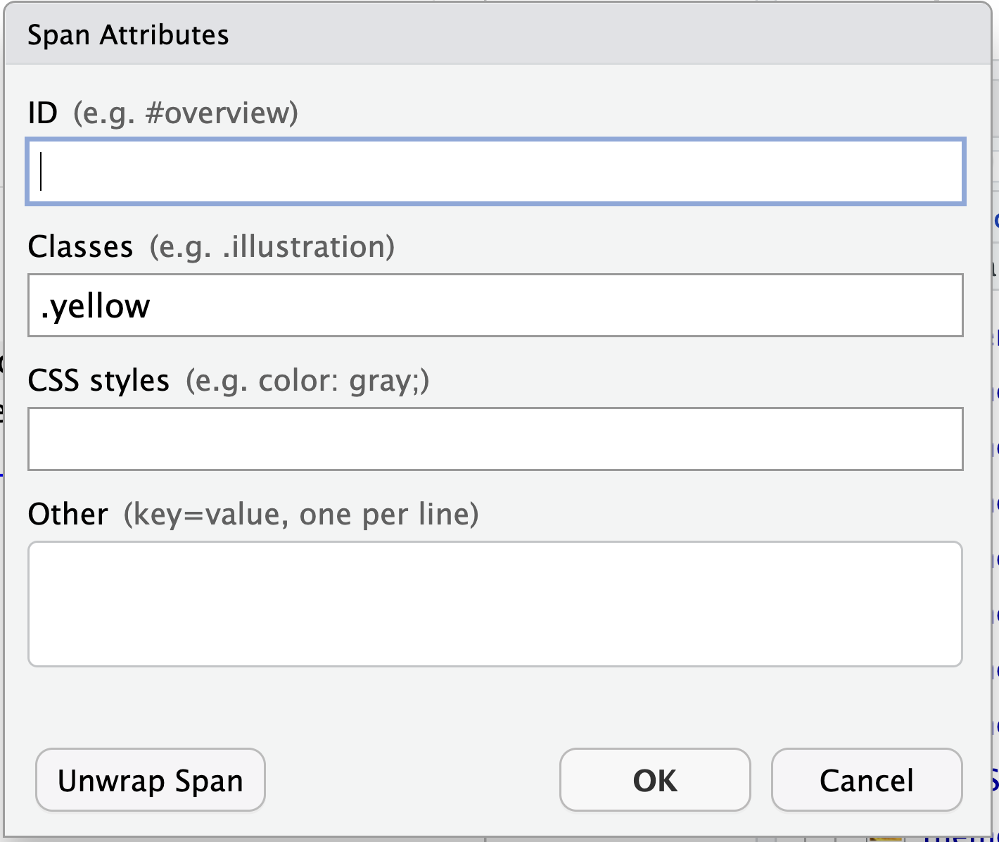
We can also apply these changes in the source editor by using the [text]{.class} syntax. I added (slightly excessive) highlighting to a couple of words. See below
[Quarto]{.blue} enables you to weave together [content]{.yellow} and [executable code]{.yellow} into a **finished presentation**. To learn more about [Quarto]{.blue} presentations see <https://quarto.org/docs/presentations/>.And we get the following slide
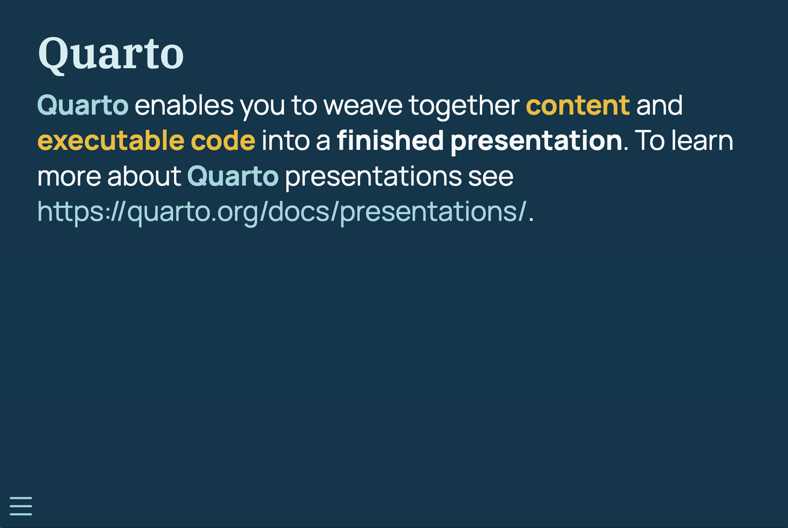
CSS classes were a game changer for my slide-making. It is a little bit more manual, but if you can write the CSS you can apply it to your slides which IMO is a super powerful tool.
There are also changes where you just want to modify the CSS directly, these changes should also be applied in the scss:rules section. For example, in our example so far, we have used the blue color both to color the links, and as a highlighting color. This is very confusing, so let us make sure that all links are underlined. We can make this happen by adding.
Note that CSS rules that target Reveal content generally need to use the .reveal .slide prefix to successfully override the theme’s default styles.
.reveal .slide a {
text-decoration: underline;
}And the changes have been applied.

6.2 Style Code
to start with we need some code that produces some output, I’ll use the following dplyr example, but any code and language will work the same. Notice how we are setting echo: true to include the source code in the output.
```r
#| echo: true
library(dplyr)
starwars %>%
mutate(name, bmi = mass / ((height / 100) ^ 2)) %>%
select(name:mass, bmi)
```without any styling, this gives us the following slide

Now we have a couple of my favorite quarto arguments and then some CSS.
First, we have code-copy and code-link which both can be found in quarto revealjs reference. code-copy adds a little icon that when clicked copies the entire code block (super useful for teaching/reference slides) and code-link allows you to have downlit add clickable links to function in the code.
Lastly, I will point out code-line-numbers. This argument can either turn off or on the line numbers in the code block. This is nice and has a lot of benefits. Firstly you can turn off the numbering if you don’t find that it is a good use of slide real estate. Secondly, you can specify line numbers to be put into focus. So setting code-line-numbers: "1,3" in the above example yields us the following output
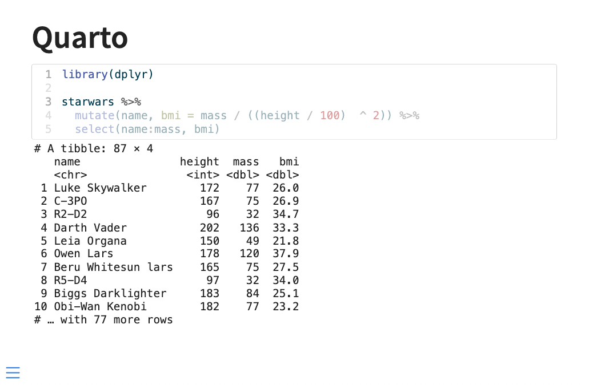
Which is a quick and easy way for you to direct the viewer’s attention.
Next, let us talk about some styling. Before we do anything custom ourselves I should note that the 10 different built-in themes also affect the styling of the code and output, and these might give you what you need.

If you want to do a little bit more you need to get your hands dirty with some CSS and SCSS. Much like we did in the first blog post we are setting up a theme and applying it. I’m going with this new sandy background color I found.
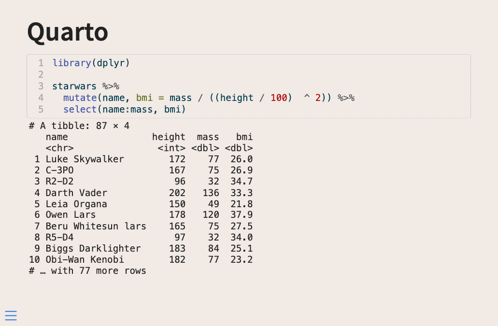
what I don’t like about this slide right now is that the code block doesn’t stand out that much. We have 3 major sass variables I want to introduce today; $code-block-bg, $code-block-border-color, and $code-block-font-size. $code-block-bg as the name suggests modifies the background of the code block, setting this color to white makes the code pop a little bit more

We can also change the border color with $code-block-border-color. This quantity defaults to being a lightened version of the main text color. We can instead set it to be a slightly darker version of the background color by setting $code-block-border-color: darken($body-bg, 20%); and getting this
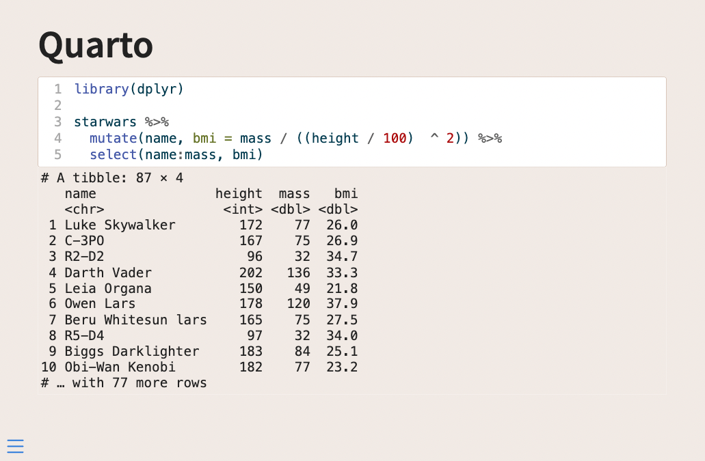
Or remove it entirely by setting it to be transparent with $code-block-border-color: #00000000;, for this look:

Lastly, we can change the font size with $code-block-font-size. While the size is pretty good right now, it is important that we know how to change it as it will depend on the fonts we use throughout the theme.
Below is an example where I turned up the size every so slightly
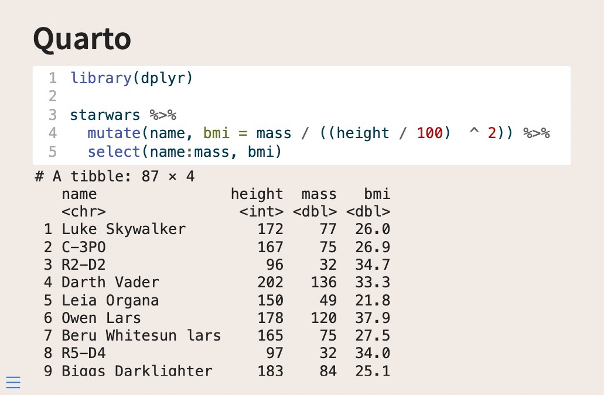
6.3 Style Output
The next thing we want to look at is how to style the output. I found that adding styles to .reveal pre code did the trick in only changing the output, not the source.
Using the following code in our .scss file
/*-- scss:rules --*/
.reveal pre code {
background-color: #FFFFFF;
}Will give us the following output

Which is already Quite a bit better. For this, I would do either one of two things.
- Make the source and output appear to be one large box
- Separate the source and output more clearly
Let us see how we can do both of these things.
To make the source and output appear as one, we need to modify the source box, since it has a little bit of a border that is making them unequal. Setting .reveal div.sourceCode {border: none} should remove the existing border, and we can remove the slight rounded border as well by also adding border-radius: 0px;. This gives a full .scss as follows
/*-- scss:defaults --*/
$theme-sand: #F1EAE5;
$theme-white: #FFFFFF;
$body-bg: $theme-sand;
$code-block-bg: $theme-white;
/*-- scss:rules --*/
.reveal pre code {
background-color: $theme-white;
}
.reveal div.sourceCode {
border: none;
border-radius: 0px;
}This gives us the following slides
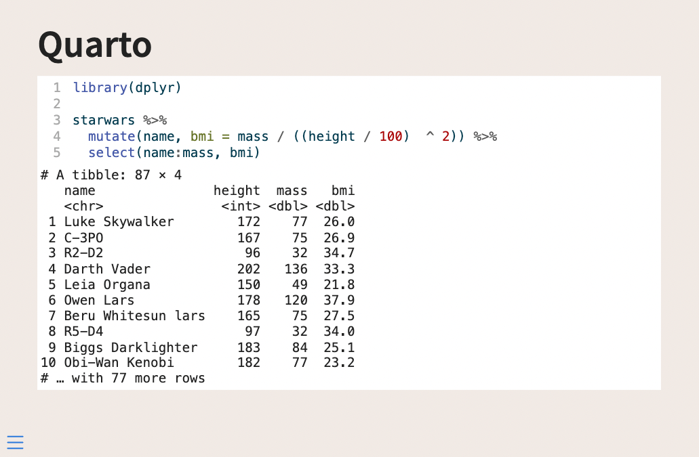
If we want some space, we can add margin-bottom: 10px !important; to the .reveal div.sourceCode specification, making it so there will be 10 pixels worth of space below the source, which gives some spacing between the two boxes. You need the !important to overwrite a more general style specification.
Making it so that part of the .scss file now looks like this
.reveal div.sourceCode {
border: none;
border-radius: 0px;
margin-bottom: 10px !important;
}And you now have a little bit of air between the boxes
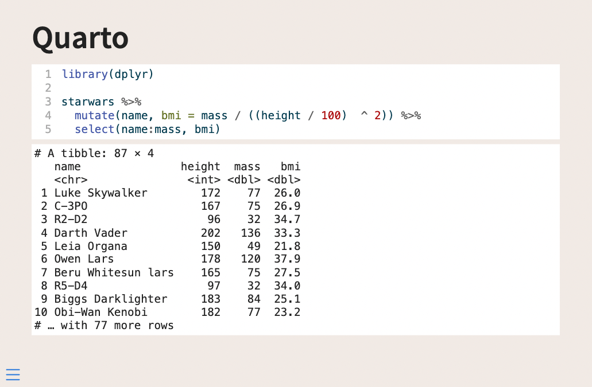
6.4 Change highlighting theme
One thing we haven’t looked at yet is how to change the highlighting theme. We will see how we can do that here. This is an often overlooked part of a presentation, that if you spend some time can tie your presentation together.
This is being controlled in the highlight-style argument. I would generally recommend that you set this option globally in your document by including it in your YAML file like so
---
format:
revealjs:
theme: [default, custom.scss]
highlight-style: "dracula"
---Which would result in the following output
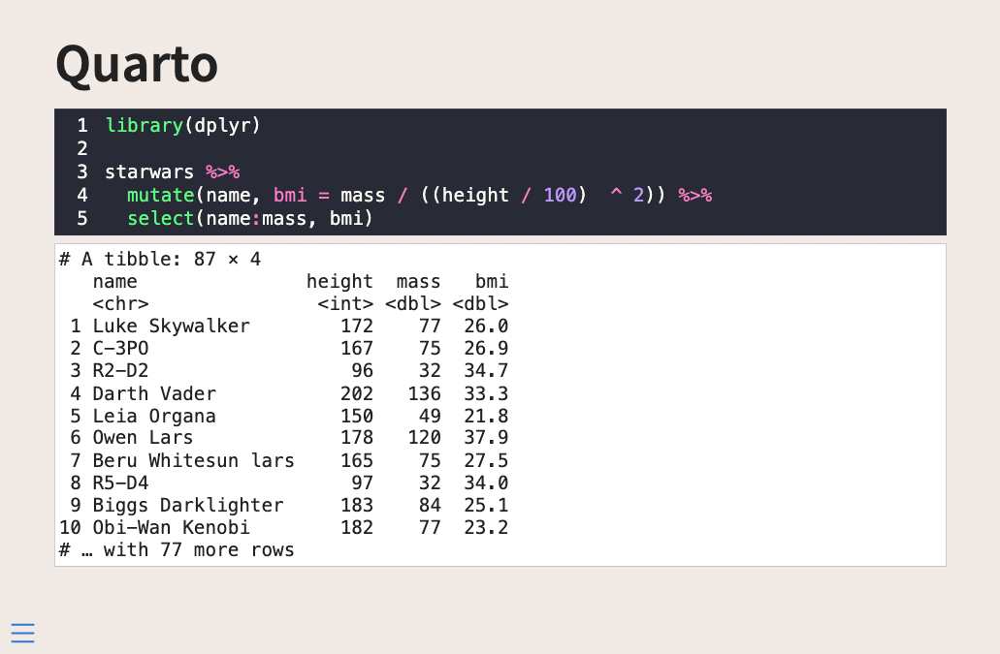
Some of the themes such as the "dracula" theme come with a built-in background color. If you set $code-block-bg in your .scss file it will be overwritten.
{
"text-color": null,
"background-color": "#f8f8f8",
"line-number-color": "#aaaaaa",
"line-number-background-color": null,
"text-styles": {
"Other": {
"text-color": "#8f5902",
"background-color": null,
"bold": false,
"italic": false,
"underline": false
},
"Attribute": {
"text-color": "#c4a000",
"background-color": null,
"bold": false,
"italic": false,
"underline": false
},There are many different highlighting themes that come shipped with Quarto. The ones with -dark and -light postfixes are themes that will adjust depending on whether your slides are dark or light.
If none of these are what you want, you can create your own. I would suggest taking one of the themes you like from the list linked above and modifying it to your liking. Copy that file into the same directory as your slides, and point to the file name instead. Like so:
---
format:
revealjs:
theme: [default, custom.scss]
highlight-style: "darkula.theme"
---If your slides use both dark and light backgrounds you will likely need two sets of highlighting theme files, which you can set with:
---
format:
revealjs:
theme: [default, custom.scss]
highlight-style:
light: light.theme
dark: dark.theme
---I slowly modified the base theme, using the Working with Color Themes documentation to help me figure out what the different names mean.
Another thing that can aid, is opening the developer tools in your browser and hovering over the kind of elements you care about. Below I am doing just that, and I see that the pipe is of class sc

From that, you can look at this list and see that it is a SpecialChar and you can modify your theme accordingly.
- ot: Other
- at: Attribute
- ss: SpecialString
- an: Annotation
- fu: Function
- st: String
- cf: ControlFlow
- op: Operator
- er: Error
- bn: BaseN
- al: Alert
- va: Variable
- pp: Preprocessor
- in: Information
- vs: VerbatimString
- wa: Warning
- do: Documentation
- ch: Char
- dt: DataType
- fl: Float
- co: Comment
- cv: CommentVar
- cn: Constant
- sc: SpecialChar
- dv: DecVal
- kw: Keyword
With these changes in place, I get to the following slides

For this theme, I also updated .reveal pre code to change the background color and the text color of the output to match the rest of the theme.
You generally don’t need to update all the items in the theme as you are unlikely to use all of them. I tend to update as I go, only updating the classes that I use.
6.5 Use fonts with ligatures
I just added some new code to a slide

and this code uses some multi-character symbols like != and |>. These and many like them are common all over the different programming languages, so much so that people have created special fonts with ligatures to make them prettier.
One such font is FiraCode.
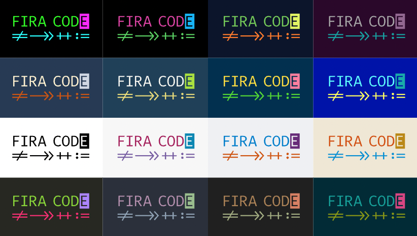
And we can add these types of fonts to our slides as well! Start by downloading the font from the site, and copy over a .woff and .woff2 file to your slide directory. I selected FiraCode-Regular.woff and FiraCode-Regular.woff2.
In the /*-- scss:defaults --*/ part of our .scss file, we are going to add the following code. This is done to register the font family from the files we have included and to have it selected for use for monospace fonts.
@font-face {
font-family: 'FiraCode';
src: url('../../../../../FiraCode-Regular.woff2') format('woff2'),
url('../../../../../FiraCode-Regular.woff') format('woff');
}
$font-family-monospace: 'FiraCode';You might have noticed some ugliness with the ../../../../../s. To my knowledge, this is the best way of using a local font-face from a file.
With all of that, we now have beautiful ligatures
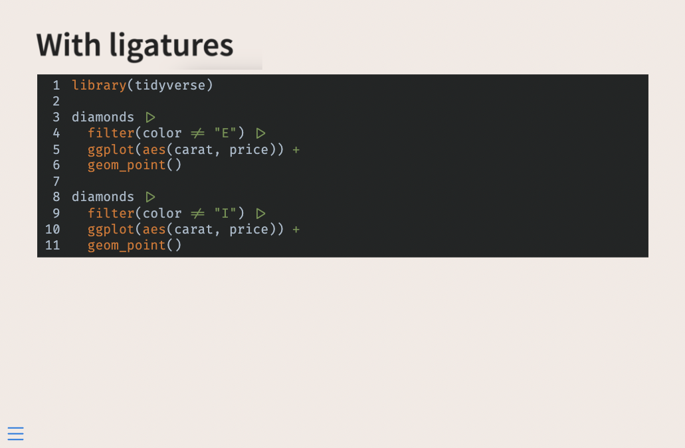
6.6 Step up your style
Every time I have shared some code with carbon.now.sh people go crazy because it always looks so good. And I agree, the defaults are really really nice.
So we are going to replicate this. This is going to be a little more involved, but if you don’t have that much code on your slides it will be a nice touch!
What I do in this case is use reprex to generate the code and output as one, I paste that into my chunk and turn off evaluation with #| eval: false. I do this because then I don’t have to worry about styling the output to match.
I switch over to using the "nord" highlight palette. It has this weird mistake because it thinks that the opening bracket is an error.
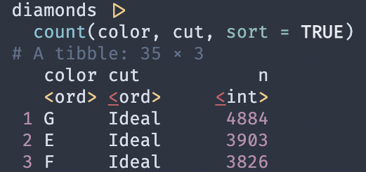
I could copy over the .theme file and modify it in the right place, but I’m lazy and modify it directly in the .scss file instead by adding which will fix the color and remove the underline
code span.er {
color: #ebcb8b;
text-decoration: none;
}The line numbers are not too important this code chunk so I set #| code-line-numbers: false. Then I start working on styling the source div.
.reveal div.sourceCode {
border: none;
border-radius: 5px;
margin-bottom: 10px !important;
box-shadow: 0 20px 47px rgb(0 0 0 / 55%);
width: fit-content;
margin: auto !important;
}The main thing that changes is that I brought back the border-radius. I added some box-shadows. These things alone make a huge difference in appearance.
Next, I changed width: fit-content;, this makes it so the width of the div changes with the width of the code, the code I have right now isn’t that wide and it looked a little lopsided. Lastly, I set margin: auto !important;, which centers the div so it doesn’t cling to the left side.
The very final thing I changed is adding some padding to the code, this is the space between the code itself and the inside border of the div, I did this by adding
.reveal div.sourceCode pre code {
padding: 25px;
}All of this results in the following slide: